クイックスタート — やることはこれだけ
上から順にやればOK。まずここで全体像を掴んで、各項目の「→ 詳しく」で説明に飛んでください。説明を全部読む必要はありません。
なぜ事前準備をするのか
合宿の価値は「インストール画面を眺めること」ではありません。自分の業務を深掘りし、AGENTS.mdに落とし、Codexで動かし、公開して、次回も育つ状態を作ることです。
ChatGPT、Claude、どちらでも使えます。「Macで〇〇のインストール方法を教えて」と話しかけるだけ。コマンドが意味不明なときも、そのままコピペして「これは何をするコマンド？」と聞けば教えてくれます。
MacでAI合宿の事前準備をしています。 Goal: Codex App / Homebrew / Node.js / Git を使える状態にしたいです。 今やったこと: - 実行したコマンド: [ここに貼る] - 出たエラー: [ここに貼る] - Macの種類: [Apple Silicon / Intel / わからない] 初心者にもわかるように、次に何を確認して、どのコマンドを1つずつ実行すればいいか教えてください。
合宿前の宿題 — 悩みを書き出してくる（重要）
当日の朝イチで、自分の業務をAIに深掘りさせます（grill-me）。その材料を事前に用意してくると、作るファイルの濃さが段違いになります。インストールより、これがいちばん効きます。
書き出すこと
- 仕事で「これが面倒」と感じていること
- 「これが進まない・詰まっている」こと
- 「これを誰か（AI）に任せたい」と思うこと
- AIに頼むとき「毎回説明していて面倒」なこと
- AIの出力を見て「自社っぽくないな」と感じた経験
【面倒なこと】 - 【進まない・詰まっていること】 - 【AIに任せたいこと】 - 【毎回AIに説明していて面倒なこと】 - 【AIの出力で「自社っぽくない」と感じたこと】 -
うまく書けないなら、AIに引き出してもらう（おすすめ）
悩みを自分で整理するのが難しい人は、ChatGPT / Claude（Codexでも可）に下のプロンプトをそのまま貼るだけでOK。AIが1つずつ質問しながら、あなたの悩みを深掘りして言語化してくれます。出てきた対話を当日そのまま持ってくれば、それが最高の材料になります。
私の仕事の悩みを言語化したいです。これから、私の業務で「面倒なこと」「進まないこと」「AIに任せたいこと」を一緒に掘り下げてください。 この件のあらゆる側面について執拗にインタビューしてください。共通理解に達するデザインの、因果関係・決定事項間の依存関係を1つずつ解決しながら進めてください。 質問は1つずつ。各質問には、私が答えやすいように「推奨回答」も添えてください。 では、最初の質問からお願いします。
スマホのメモアプリや音声入力で話して、その文字起こしを当日そのまま貼ればOKです。話した方が本音が出やすい人はそちらで。
全体像 — 入れるものとスキル一覧
詳細セクションを読む前に、まず全体を把握してください。必須から順に進め、任意はあとで判断でOKです。
インストールするもの
| ツール | 種別 | 用途の一言 | 詳細 |
|---|---|---|---|
| Homebrew | 必須 | Macのパッケージマネージャ。これが入れば他は全部1行で入る | → Section 1 |
| Node.js / Git | 必須 | CLIツールの実行環境。agent-browser や Codex CLI の前提 | → Section 2 |
| Codex App | 必須 | 合宿のメインAIエージェント。AGENTS.mdを読んで自律作業する | → Section 3 |
| ChatGPTアプリ（スマホ） | 推奨 | Codexをスマホからリモート操作。MacのCodexが動いていれば外出中でも指示できる | → Section 4A |
| Claude Code | 推奨 | claude rc でスマホリモコン化できる。デュアル運用にも |
→ Section 4B |
| ngrok | 推奨 | 作ったHTMLを即URLで共有できる一時公開ツール | → Section 7 |
| agent-browser | 必須 | 公開URLをAIに自律的に読ませる | → Section 8 |
| gbrain | 必須 | AGENTS.md / memory / state を作る前に入れる記憶の器 | → Section 9 |
| Composio | 任意 | GitHub / Asana / Slack など1000以上のMCPを一元管理 | → Section 10 |
| Obsidian | 任意 | MarkdownファイルをGUIで管理・検索する | → Section + |
使うスキル・リポジトリ
当日は「当日コア」だけ全員でやれば十分です。「後日でOK」は興味があれば帰ってから。全部を当日やろうとすると、ツアーで終わって何も身につきません。
| リポジトリ | 用途 | 使う時期 | 難易度 | リンク |
|---|---|---|---|---|
openclaw/gogcliGoogle Sheets/Drive CLI |
Codexからスプレッドシートを作成・読み書きする。PCをコックピットにする体験。Section 10で使用 | 当日コア | 中 | GitHub |
teng-lin/notebooklm-pyNotebookLM連動 |
資料置き場をNotebookLMに集め、Codexから呼び出す。PCをコックピットにする体験。Section 12で使用 | 当日コア | 中 | GitHub |
upstash/context7最新ドキュメント参照MCP |
古い書き方で詰まらないよう、ライブラリの公式ドキュメントをリアルタイム参照する | 後日でOK | 易 | GitHub |
vercel-labs/agent-browser公開URLを読むCLI |
Vercel/ngrokで公開したHTMLをAIに確認させる。Section 18で使用 | 当日コア | 中 | GitHub |
garrytan/gbrainPC記憶装置・知識グラフ |
PC内の情報を知識グラフ＋ハイブリッド検索で整理し、AIの「長期記憶」として使う。MCP対応 | 当日コア | 中 | GitHub |
用語プライマー — AGENTS.md / CLAUDE.md とは
この合宿で何度も出てくる用語を先に整理します。
@import、Planモードなど、Claude Code固有の機能を書く場所。| 用語 | 意味 | 合宿での使い方 |
|---|---|---|
| インストラクション・バジェット | AIが安定して守れる指示量の限界。150〜200指示を超えると崩れやすい。 | AGENTS.mdを肥大化させず、SkillやDocsに分ける。 |
| Context Rot | 会話が長くなるほど、AIの参照・判断精度が落ちる現象。 | 必要な資料だけを読ませる。全部貼らない。 |
| Progressive Disclosure | 必要な時に必要な情報だけ開く設計。 | AGENTS.mdを目次にし、詳細はskillsやdocsに分ける。 |
1Homebrew のインストール
Homebrewは「Macのアプリストア」のようなもの。これを入れると、ほぼすべての開発ツールを1行のコマンドでインストールできるようになります。
ターミナルの開き方（初めての人向け）
Dockの一番左にある笑顔のアイコン、または画面左上の 🔍 で「Finder」と検索。
または Spotlight（⌘ + Space）で「terminal」と入力して起動。黒い画面が出ればOK。
⌘ + V で貼り付けられます。右クリック → 「ペースト」でもOK。
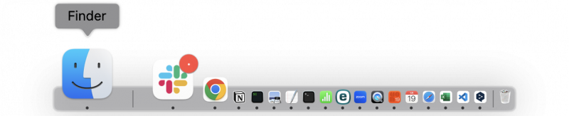
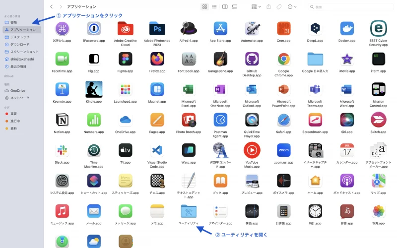
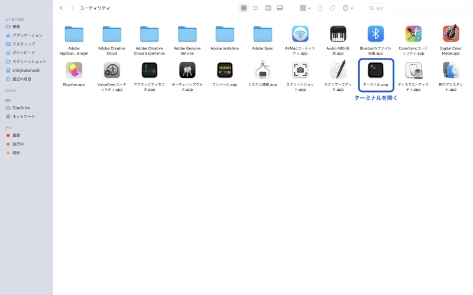
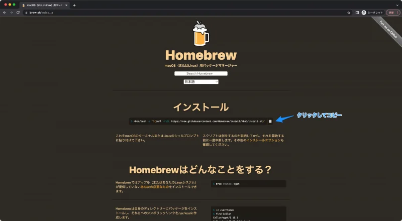
インストールコマンド
/bin/bash -c "$(curl -fsSL https://raw.githubusercontent.com/Homebrew/install/HEAD/install.sh)"
Macのパスワードを求められます。入力しても画面には文字が表示されません（セキュリティのため）。でも入力はされています。そのまま Enter を押してください。
PATH を通す（Apple Silicon Macの場合）
M1/M2/M3/M4 Mac を使っている場合、インストール後にターミナルの指示に従って PATH を通します。インストール完了時に 「Run these two commands...」 と表示されるので、その2行をコピーして実行してください。
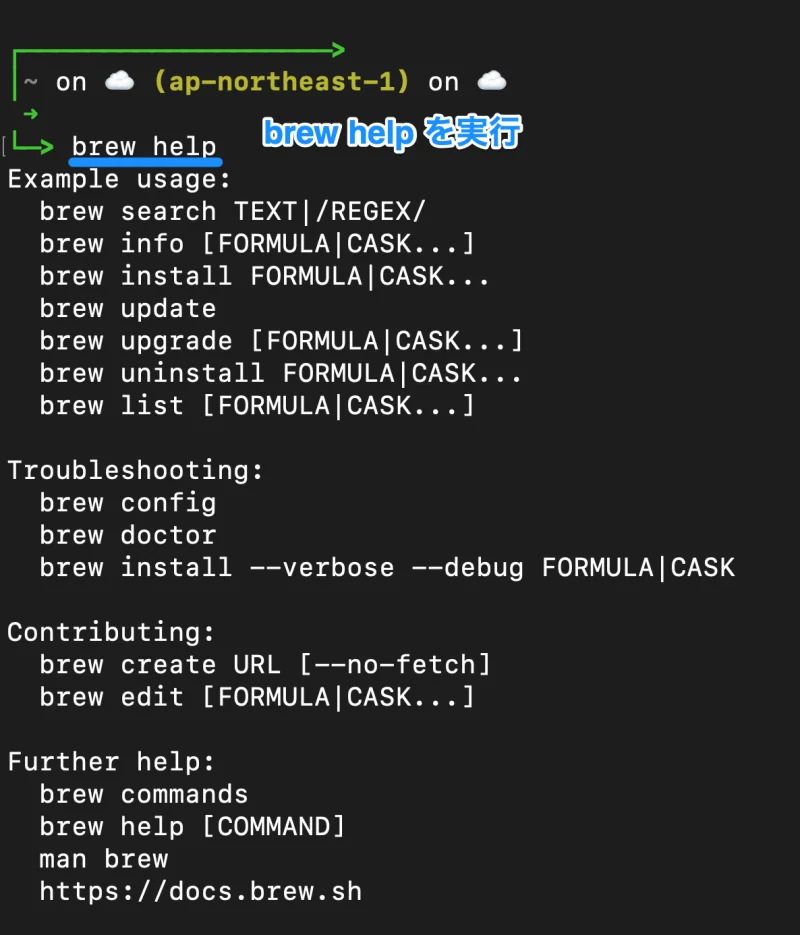
「この画面で次に何を打てばいい？」
とAIに聞く
echo 'eval "$(/opt/homebrew/bin/brew shellenv)"' >> ~/.zprofile
eval "$(/opt/homebrew/bin/brew shellenv)"
インストール確認
brew --version
エラーが出たら、赤いメッセージをそのままコピーして ChatGPT か Claude に「このエラーの直し方を教えて」と貼り付けてください。ほとんどのエラーは解決できます。
よく使う brew コマンド
| コマンド | 意味 | 使う場面 |
|---|---|---|
brew search 名前 | インストールできるものを探す | ZoomやChromeなど、名前が合っているか確認したい時 |
brew install 名前 | CLIや開発ツールを入れる | Node.js、Git、gogcliなど |
brew install --cask 名前 | Macアプリを入れる | Chrome、VS Code、ngrokなど |
brew list | 入っているものを見る | 「もう入ってる？」を確認したい時 |
brew update | Homebrewの情報を更新する | インストール前に情報を最新にする |
brew upgrade | 入っているものを更新する | 古いツールをまとめて更新する |
2Node.js と Git のインストール
Homebrew が入れば、残りは1コマンドずつ。エラーが出たら AIに聞きながら進めてOKです。
Node.js
JavaScript の実行環境。多くのCLIツールが Node.js ベースなので必須。
brew install node
node --version
npm --version
Git
コードのバージョン管理。Vercel公開でも使う。
brew install git
git --version
「node --version が通りません」のように状況をそのまま伝えればOK。「私は Mac の M3 チップを使っています」のように環境を添えるとより正確に答えてくれます。
3Codex App のセットアップ
Codex App は公式サイトから取得します。ブラウザダウンロード → インストール → ChatGPTアカウントでログイン の流れです。
ホームフォルダ全体や書類フォルダ全体を開かない。Codexは開いた作業フォルダ以下を読んだり編集したりできます。
developers.openai.com/codex/app/ を開いてダウンロード。
GitHubアカウントは後で使う。ここはChatGPTアカウント（OpenAI）でログイン。
デスクトップ等に
codex-bunshin-os フォルダを作り、Codexで開く。左下にフォルダ名が見えればOK。チャット欄に「こんにちは」と入力して返事が来ればセットアップ完了。
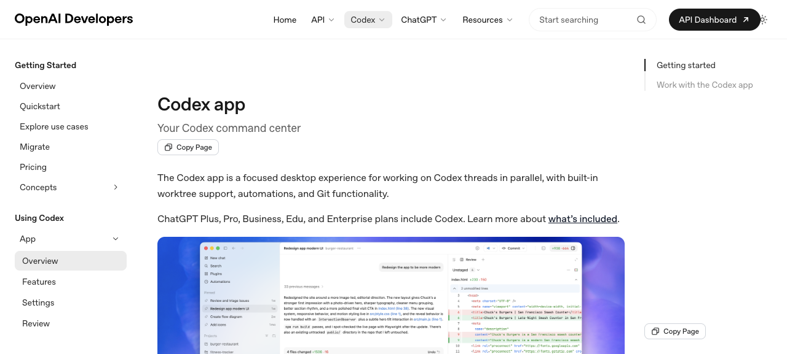
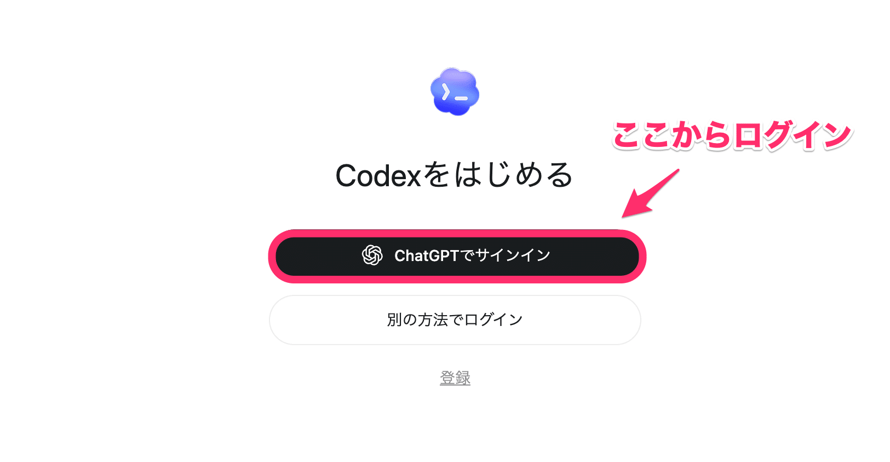
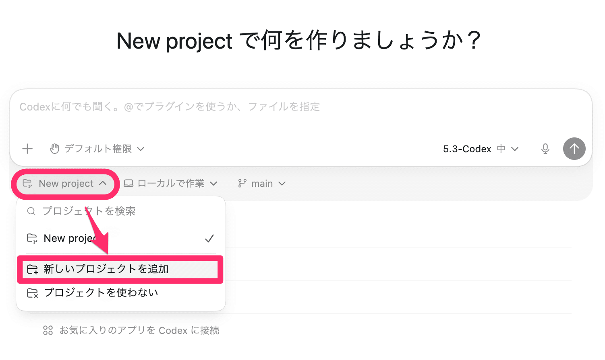
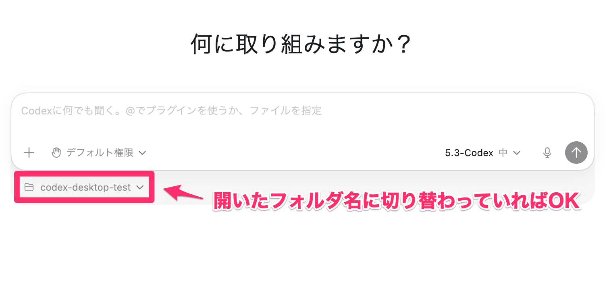
CLIで作業フォルダを作る場合（任意）
mkdir -p ~/codex-bunshin-os/logs ~/codex-bunshin-os/outputs
cd ~/codex-bunshin-os
codex
4スマホからリモートで指示を出す
AI組織のCEOは、Macの前にいる必要はありません。Codex も Claude Code も、スマホから指示・確認・承認できます。長い作業を任せながら移動する、会議中に方向修正する — リモコン操作が当日の基本動作になります。
claude rc を実行するとQRコードが表示され、スマホブラウザ（claude.ai/code）から即リモート操作A. Codex Mobile（ChatGPTアプリ）
Codex Mobileはスマホ単体でMac内のファイルを編集するものではありません。Mac側のCodex Appが動いていて、その作業状態をスマホのChatGPTアプリから見る・動かす、という理解です。
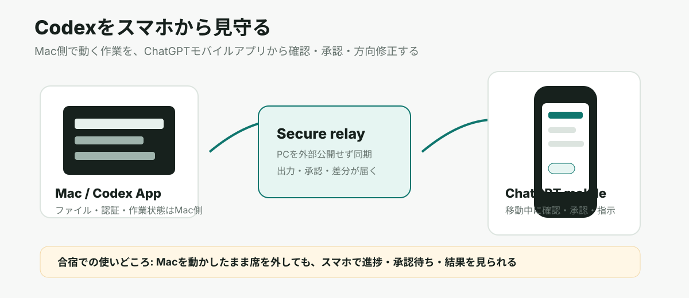
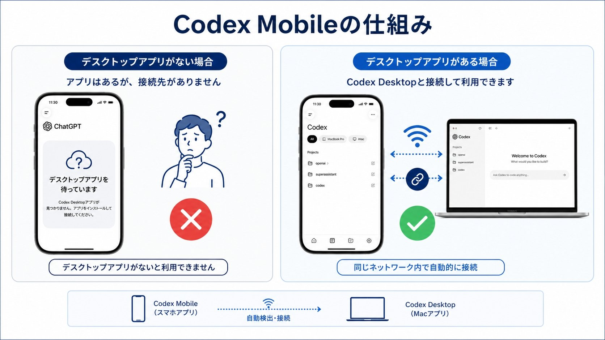
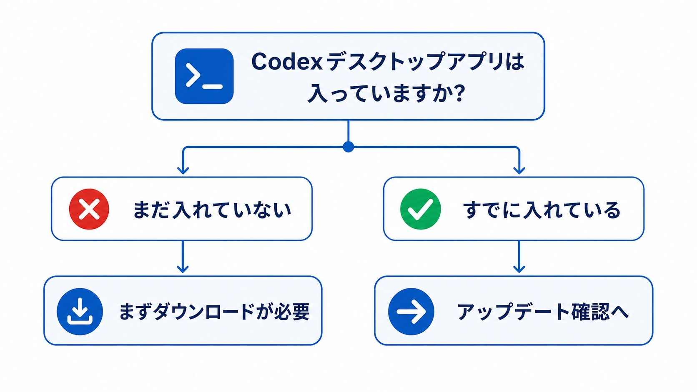
事前にやること
Codex Appを開き、右上などに更新表示が出ていたら更新する。古いままだとスマホ側が「デスクトップアプリを待っています」から進まないことがあります。
App Store / Google Play から公式ChatGPTアプリを入れ、Mac側と同じChatGPTアカウントでログインする。
ChatGPTアプリ内のCodexを開く。表示されない場合は、アプリ更新、同じアカウントか、ロールアウト状況を確認する。
スマホが待機画面になったら、Mac側のCodex Appに戻り、左メニューや案内に出る「Codex mobileを設定」を押して接続する。
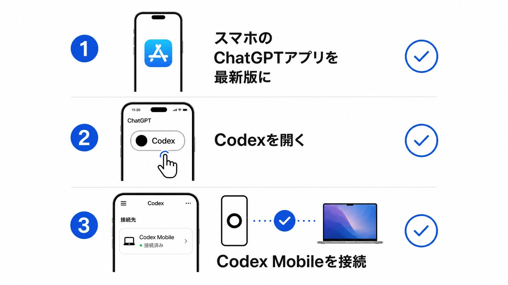
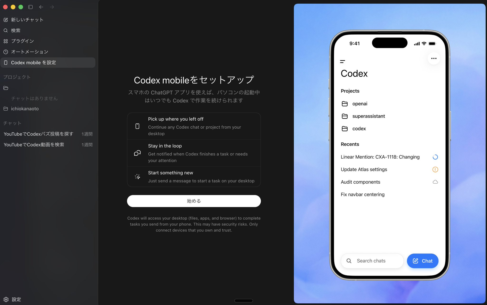
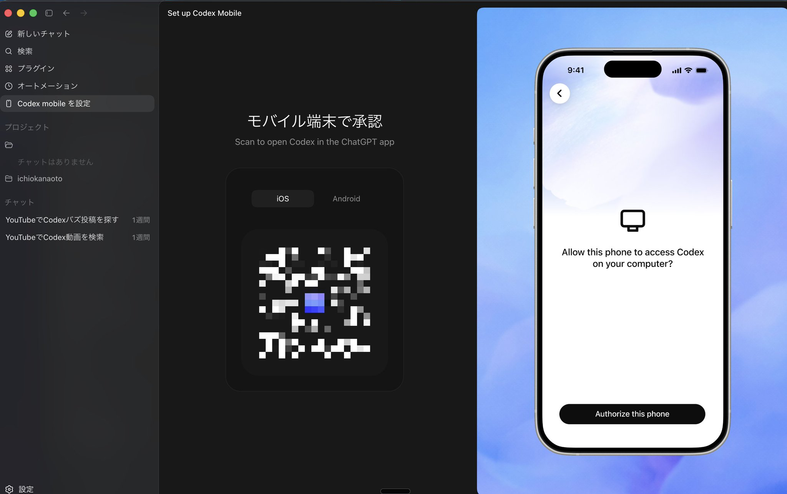
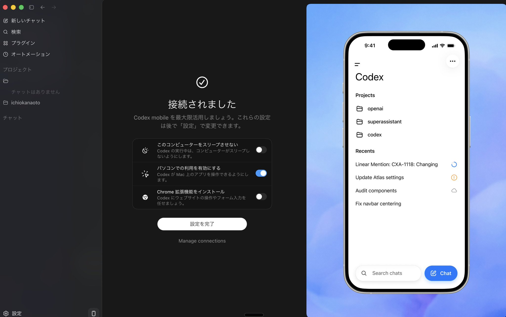
合宿での使いどころ
B. Claude Code Remote Control
Claude Code には組み込みのリモートコントロール機能があります。ターミナルで1コマンド実行するだけで、スマホブラウザ（claude.ai/code）から同じセッションを操作できます。Codex Mobileと同じ「リモコン」用途を、Claudeで実現する方法です。
claude rc を実行 → ターミナルにセッションURLとQRコードが表示 → スマホで読み取るだけで接続
/config → 「Enable Remote Control for all sessions」を true にセットすれば、毎回コマンドを打たなくて済む
セッションURL + QRコード
スペースバーでQRコードが出る
claude.ai/code を開く
またはQRコードを読み取る
セットアップ手順
詳細は Section 6。
npm install -g @anthropic-ai/claude-code で入ります。
Claude Code を起動し、
/config を入力 → 「Enable Remote Control for all sessions」を true に設定する。以降は毎回自動でリモコン待機状態になる。
プロジェクトフォルダで
claude rc を実行するか、既存セッション内で /rc と打つ。ターミナルにURLとQRコードが表示される。
スマホのカメラでQRコードを読み取るか、表示されたURLを
claude.ai/code で開く。接続すればスマホから指示できる。
claude rc
/rc
5合宿リポジトリを同期する（重要）
この合宿サイトと対話型ガイド（journey/）は GitHub リポジトリ sento-group-inc/Aigassyuku06 に入っています。各自のMacに同期（clone）して、そのフォルダをCodex/Claudeで開きます。当日の対話はこのフォルダの中で行います。
例：デスクトップ。
Codex Appなら「フォルダを追加」で
Aigassyuku06 を選ぶ。「
このリポジトリの journey/README.md を開いて読んで、その手順で私を導いて」と打つだけ。cd ~/Desktop
git clone https://github.com/sento-group-inc/Aigassyuku06.git
cd Aigassyuku06
git pull
codex-bunshin-os/ サブフォルダに生成されます。ここは .gitignore 済みなので、あなたの会社情報がGitHubに上がることはありません。「git clone って何をするの？」「このフォルダどこにできたの？」など、そのままCodexやChatGPTに聞けば教えてくれます。
6Claude Code のセットアップ
Codex と並んで使えるAIエージェント。スマホリモコン（claude rc）や agmsg デュアル運用のために入れておくと当日の幅が広がります。リモートコントロールの詳細は Section 4B を参照。
npm install -g @anthropic-ai/claude-code
claude --version
7ngrok のインストール
ngrok はローカルで動かしているサーバーを、インターネット経由で一時的に公開するツール。「自社の方針HTMLを作って今すぐURLで共有したい」ときに便利。
ngrok = コマンド1行で今すぐ外部公開。一時的な共有向け。
brew install --cask ngrok
インストール後は ngrokダッシュボード でアカウント作成してトークンを取得してください（無料）。
ngrok config add-authtoken YOUR_NGROK_TOKEN
8agent-browser のインストール
公開した URL を AI に読ませながら進めるためのツール（Rust製 CLI）。「この合宿サイトを Codex に読ませて、次にやることを聞く」ような使い方ができます。
npm install -g agent-browser
agent-browser install
9gbrain のインストール
gbrain は、PC内の判断履歴・業務ナレッジ・作業ログをAIが参照しやすい形にする記憶の器です。AGENTS.md / memory.md / state.md を作る前に入れておくと、午後の深掘り結果を蓄積しやすくなります。
repo-intakeスキルを使ってこのリポジトリを導入判断してください。 URL: https://github.com/garrytan/gbrain
gbrainをこのMacに最小セットアップしてください。 まず公式READMEを確認し、インストール、起動確認、AGENTS.md / memory.md / state.md を作る前にどう使うかを短く説明してください。
10Composio — MCP をまとめて管理する
MCP を1つずつ手で設定するのが面倒な人向け。Composio Connect を使うと GitHub / Asana / Slack / Notion など 1000以上のツール を、1つのMCP接続から扱えるようになります。
Composio とは
https://connect.composio.dev/mcp を1本つなぐと、Composio側でGitHub、Asana、Slackなどの接続を管理できます。
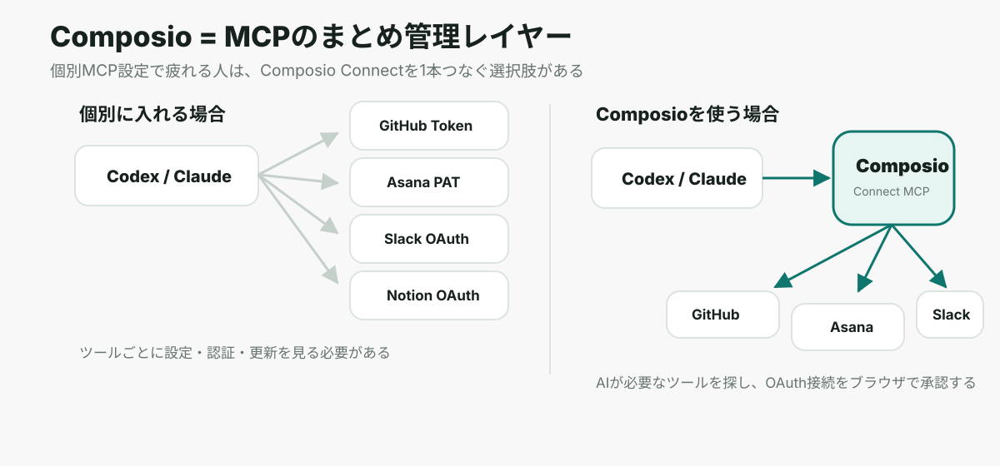
仕組みのイメージ（Composio なし vs あり）
Composio なし
Composio あり
セットアップ手順
dashboard.composio.dev でアカウントを作成し、ダッシュボードを開く。
GitHub、Asana、Slackなど、使いたいアプリを選んでブラウザでOAuth認証する。
Codexのチャットに下の依頼を貼る。手でconfigを書くより、Codexに設定してもらう方が当日再現しやすい。
Codexに「Composioで使えるツールを探して」と聞く。接続済みアプリが出ればOK。
ComposioをCodexで使えるように設定してください。 公式ページ https://composio.dev/codex を確認し、MCPサーバー名を composio、transport type を HTTP、URL を https://connect.composio.dev/mcp として追加してください。 認証が必要な場合は、ブラウザで私が承認します。 設定後、Composioで接続できるアプリ候補を検索して、GitHub / Asana / Slack / Notion のうち今回の合宿で使う価値が高いものを提案してください。
合宿では各MCPを個別設定する方法（Section 06）をメインで説明します。Composio は「もっと楽にまとめて管理したい人向け」の選択肢として紹介します。
「Composio のセットアップ方法を教えて」と Claude か Codex に聞くと、ダッシュボードの操作手順も含めて答えてくれます。
+Obsidian（任意） — Markdownファイルをビジュアルで管理する
AGENTS.md / memory.md / brand-voice.md などのファイルを、GUIで管理・検索したい人向けのオプションツールです。必須ではありません。Finderやエディタで管理しても同じ効果があります。
brew install --cask obsidian
インストール後は 作業フォルダ（codex-bunshin-os/）をVaultとして開くだけでOKです。Codexが作ったmarkdownファイルをそのまま表示・編集できます。
アカウント作成
アカウント作成・APIキー取得・パスワード入力は本人が行ってください。AIに代行入力させないでください。
YOUR_XXX の形で扱います。事前チェックリスト
当日9:30からすぐ深掘りに入るための確認リストです。全部にチェックが付く状態を目指してください。
上のリストが通らないとき → エラーメッセージや状況を ChatGPT か Claude に貼り付けて「どうすれば直せる？私は Mac を使っています」と聞いてください。自分の環境を添えると回答が精度上がります。